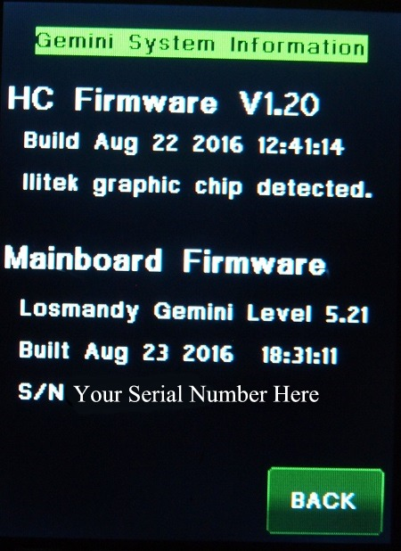
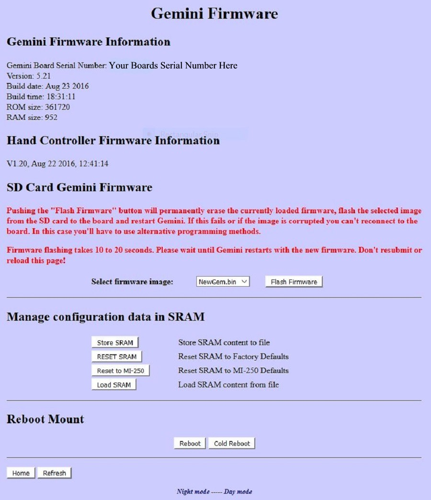

| HOW TO TELL WHAT FIRMWARE VERSIONS AND DATES YOU HAVE. |
|
Click here for the latest firmware.
Latest firmware is 12 March 2017 for both the main unit and Hand controller.. This is
for both the original version of the Gemini-2 units and the new Gemini-2
Mini. This adds support for the new G11T and G811 mounts. Note:
The Titan 25 support has been dropped since only 1 was produced. This is the new L5.21 version of the main firmware and the L1.2
Version of the hand controller. This is NOT BETA Firmware.
The Gemini-2 has not been running beta firmware since Dec 2012. Please see L5.21 changes to see all the changes in this version of firmware. To update all firmware, please use the GFU (Gemini-2 Firmware Updater). Here is links for (GFU for Windows) instructions on each page. |
|
There are now two ways to tell which firmware versions you have. 1. On the hand controller go to MENU-->HC-->INFO. The HC firmware version will be listed first. WE GO BY THE BUILD DATE TO DETERMINE VERSIONS. Then the Firmware in the Main unit will be listed. These are two separate peaces of firmware and can have different versions and build dates. Here is an example: |
The Picture below is not of the latest version.  |
|
2. The second way to tell the firmware version is from the web interface. If you have not connected to the web interface click here for instructions. . |
| Once you have logged on you should see a page like this: |
|
|
When you click on the entry "Firmware/SRAM" you will see a page like the following page. |
|  |
|
This date is what you go by to tell if you have the latest firmware. Build times are not normally used. The hand controller firmware date in the above picture is V1.20 with a date of 22 Aug 2016. The Main Firmware is 23 Aug 2016, Version 5.21 These are versions. If you do not see a firmware version under the "Hand Controller Firmware Information" area, then you have not allowed the Gemini-2 to go through the boot process. It has to be at least Cold, Warm or Warm Restarted before the hand controller's firmware date will show up. This is also the page that you will use to flash the NewGem.bin file if you are programming the firmware through the web interface. You can also reset the battery backed up SRam by hitting "Reset SRam" You can also back up the contents of the battery backed up SRAM to the micro-SDcard in the main unit. Hit Store SRAM to do this. If your main Gemini-2 unit is connected Via Ethernet, and powered on, this Firmware/Sram Link will take you to the page in your unit illustrated above. It uses the link http://gemini/firmware.cgi. You will be more than likely presenting with a Login box first. |